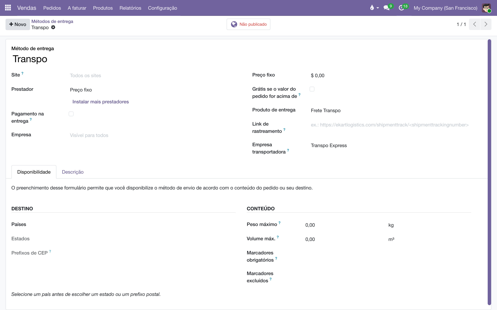
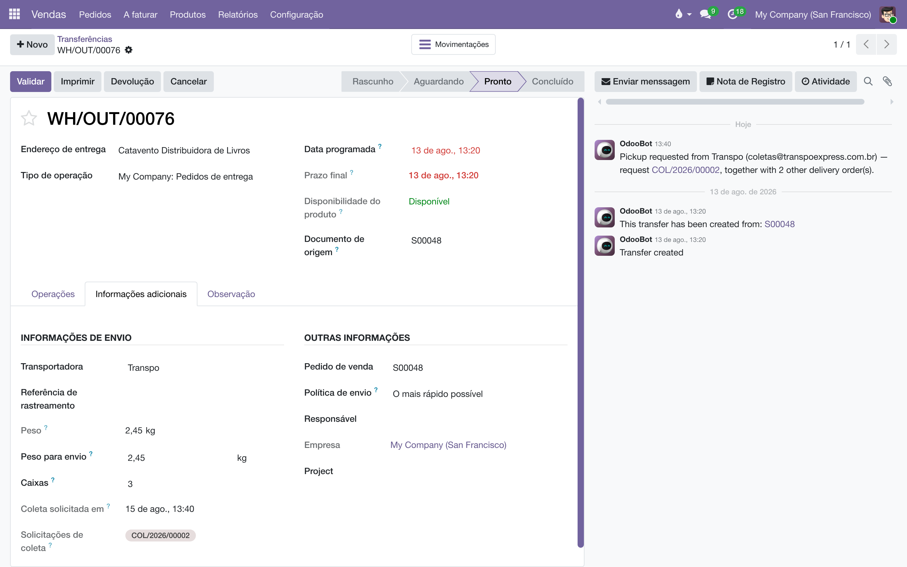
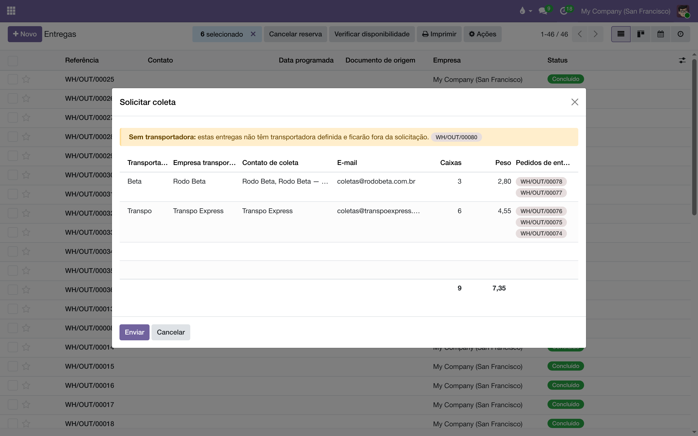
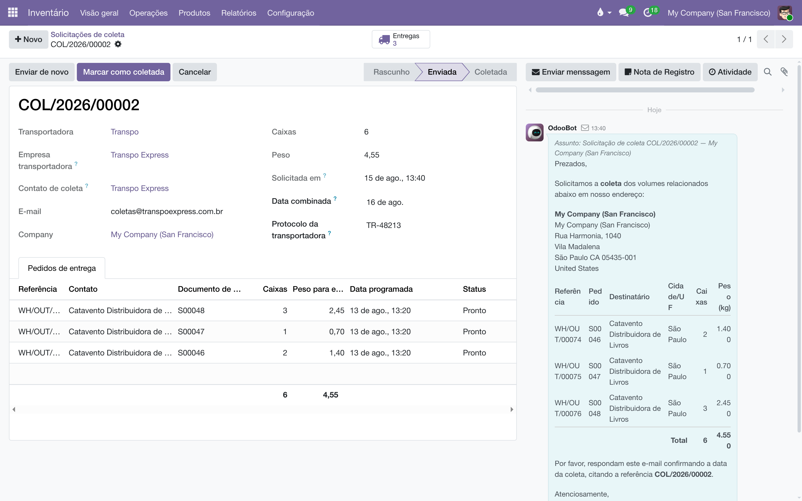

Cada cliente tem a sua transportadora, e quem embala precisa de duas coisas: ver na entrega quem a leva, e chamar a transportadora para buscar. Este manual mostra o caminho inteiro — cadastrar a transportadora, apontá-la no cliente e pedir a coleta por e-mail.
São dois cadastros que se completam: a empresa (um contato comum) e o método de entrega (o nome que aparece nas telas de venda e de entrega).

Transportadora grande não atende coleta na caixa geral. Se a que você usa tem uma mesa de coletas com endereço próprio, crie dentro da ficha dela um contato do tipo Entregas com esse e-mail: a solicitação passa a ir para ele, e o e-mail geral da empresa fica só para o resto. O campo Contato de coleta, na solicitação, mostra sempre para quem vai — e pode ser trocado antes do envio.
Na ficha do cliente, aba , campo Método de entrega. É ali que se diz, por exemplo, que a livraria Catavento usa a Transpo. Só isso: o resto acontece sozinho.
A transferência de saída já nasce com a transportadora do cliente. Ela aparece na ficha da entrega, aba , bloco Informações de envio — e pode ser trocada ali, entrega por entrega, enquanto o movimento não foi validado.
Se o cliente não tem método de entrega preenchido, a entrega nasce sem transportadora — e vai aparecer como aviso na hora de pedir a coleta.

A nota fiscal precisa declarar quantos volumes vão e quanto pesam — e é a movimentação que sabe. Na ficha da entrega, aba , ao lado da transportadora:
| Campo | De onde vem |
|---|---|
| Caixas | Ninguém calcula: quem embala conta e digita. É o número que a nota declara e que a transportadora usa para escolher o veículo. |
| Peso | Somado do peso dos livros da entrega. Se os livros não têm peso cadastrado, sai zero — e aí quem fatura pesa a caixa e digita na nota. |
| Peso para envio | Opcional: o peso medido na balança. Quando preenchido, ele vale no lugar da soma. |
Na fatura, aba , bloco Volumes e peso: quem fatura confere, corrige se precisar, e tem o botão Trazer da movimentação para buscar de novo os números das transferências.
Da lista de entregas, em lote — nunca uma por uma.

O Odoo leva você direto à solicitação criada — é lá que ela passa a morar.
Em . Cada solicitação é um lote numerado (COL/2026/00001) com uma transportadora e as entregas que ela vem buscar. É esse número que se cita ao telefone.
Na ficha da solicitação estão o e-mail que saiu (no histórico, à direita, como foi escrito) e os campos que a logística preenche quando a transportadora responde:

| Campo / botão | Para quê |
|---|---|
| Data combinada | O dia que a transportadora confirmou para a coleta. |
| Protocolo da transportadora | O número que ela dá à coleta, quando dá — o que se cita para cobrar. |
| Marcar como coletada | Fecha a solicitação quando o caminhão passou e levou. |
| Enviar de novo | Reenvia o mesmo pedido, sem criar outro lote — para quando ninguém responde. |
Cada entrega também guarda o seu rastro: a data em Coleta solicitada em, o link para a solicitação na aba , e uma nota no histórico dizendo a quem foi pedida. Na lista de entregas, os filtros Com coleta solicitada e Sem coleta solicitada separam o que já foi chamado do que ainda espera.
Em , campo Texto do e-mail de solicitação de coleta. O texto é por empresa; vazio, vale o padrão do sistema ("Solicitamos a coleta dos volumes relacionados abaixo…"). A tabela de entregas e o endereço de coleta entram sempre, independentemente do texto.
| O que aparece | Por quê | O que fazer |
|---|---|---|
| "Solicitar coleta" não está no menu Ações | Nenhuma linha marcada, ou a tela não é a lista de entregas. | Volte à lista de Pedidos de entrega e marque ao menos uma linha. |
| Aviso "Sem transportadora" na janela | Aquelas entregas não têm transportadora preenchida. | Elas ficam fora do envio, sem travar as demais. Preencha a transportadora na ficha da entrega (ou no cliente, para as próximas) e peça de novo. |
| Linha vermelha na janela, e depois uma solicitação em Rascunho | O contato da transportadora está sem e-mail. | O agrupamento não se perde: a solicitação é criada em rascunho. Complete o e-mail no contato da transportadora e clique Enviar na ficha dela. |
| O e-mail ainda não chegou | O envio sai em lote pela fila do sistema, não na hora do clique. | Aguarde alguns minutos. Em ambiente de teste o envio externo fica contido de propósito. |
Todo documento do sistema carrega um prefixo na numeração — CO/2026/00001 é um acerto, AT/2026/00042 é um chamado. A lista é a mesma em todos os manuais:
| Prefixo | O que é |
|---|---|
C | Pedido de consignação: o pedido que põe livros na prateleira do cliente — C00001, no lugar do S da venda comum. |
CO/ | Consignação, o documento do acerto: registra o que o cliente vendeu e vira venda — CO/2026/00001. |
CR/ | Retorno de consignação: o documento que pede a devolução dos exemplares da prateleira — CR/2026/00001. |
CA | Auditoria de consignação: reconstrói o saldo da prateleira do cliente pelas notas fiscais e registra o ajuste — CA00001. |
CP/ | Campanha de consignação: o sortimento-alvo por canal — quantos exemplares de cada título as prateleiras devem ter — CP/2026/0001. |
AC/ | Acordo de Consignação: o contrato com a livraria, dono da prateleira — AC/2026/00001. |
COM/OUT/ | A série da remessa de consignação ao cliente, do armazém à livraria — COM/OUT/2026/00001, no espelho do WH/OUT. |
MP/OUT/ | A série das entregas de marketplace (Olist): o pacote de pessoa física, na caixa de despacho própria do depósito — MP/OUT/2026/00001. |
COM/MOV/ | A série dos fluxos internos de prateleira da consignação — COM/MOV/2026/00001. |
COM/IN/ | A série do retorno de consignação, da prateleira ao armazém — COM/IN/2026/00001, no espelho do WH/IN. |
REM/ | Remessa: a nota de simples remessa, sem cobrança — a numeração vem do diário fiscal REM. |
COL/ | Coleta: o lote do pedido de coleta às transportadoras — COL/2026/00001. |
AT/ | Atendimento: o chamado nascido do e-mail comercial — AT/2026/00001. |
MBX/ | O lote de envio de metadados à Metabooks — MBX/2026/00001. |
Impostos de Direitos Autorais/ | O lote da fatura acumuladora do IRRF retido dos autores no mês. |
Royalties entre Empresas/ | O lote da fatura acumuladora de royalties entre as empresas da casa. |
| Do próprio Odoo | |
S | Pedido de venda comum — S00001; o pedido de consignação usa o C no lugar. |
WH/OUT | Entrega comum do armazém: a transferência de saída padrão do Odoo. |
WH/IN | Recebimento do armazém: a transferência de entrada padrão do Odoo. |
Bases antigas guardam transferências nas séries COM/ e RET/, de antes da separação por direção — o histórico não é renumerado.
Manual completo, com busca e as demais páginas: Transportadora e coleta.